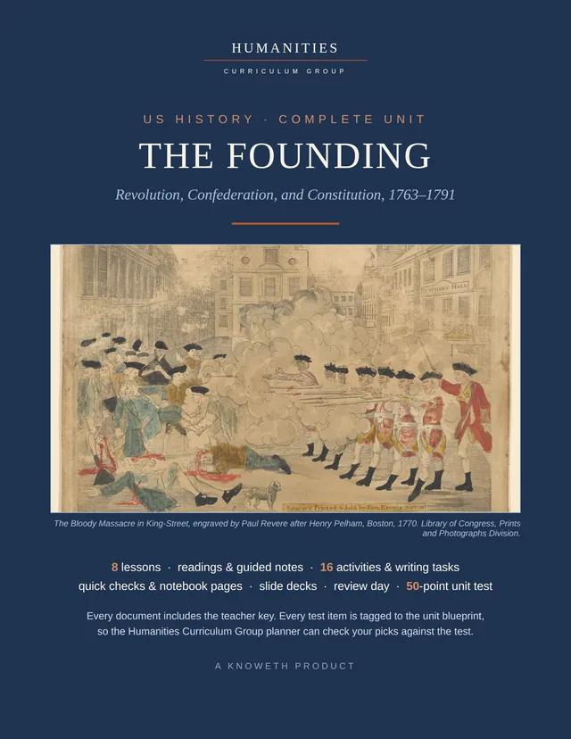
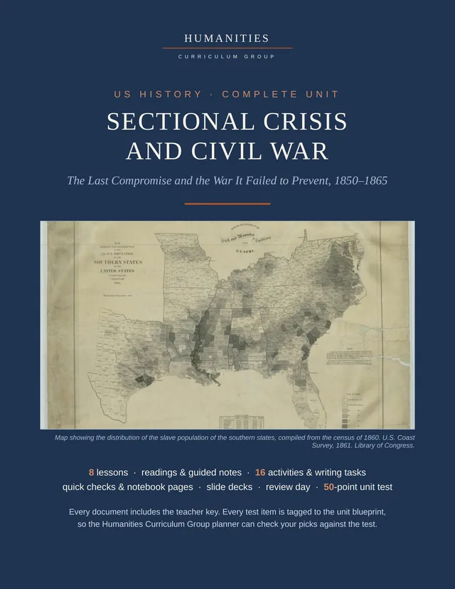
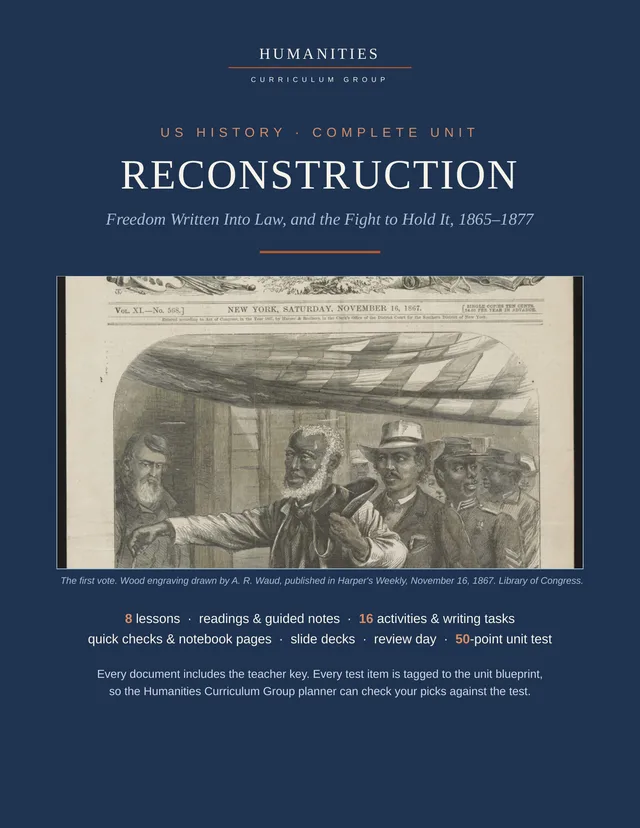
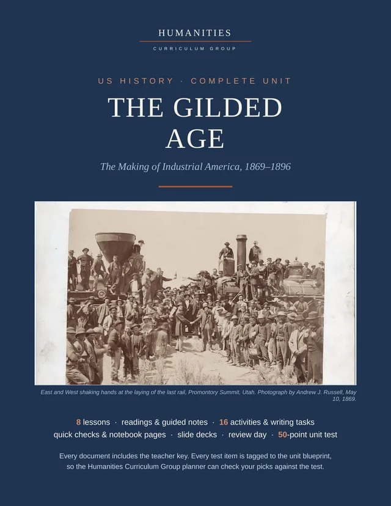
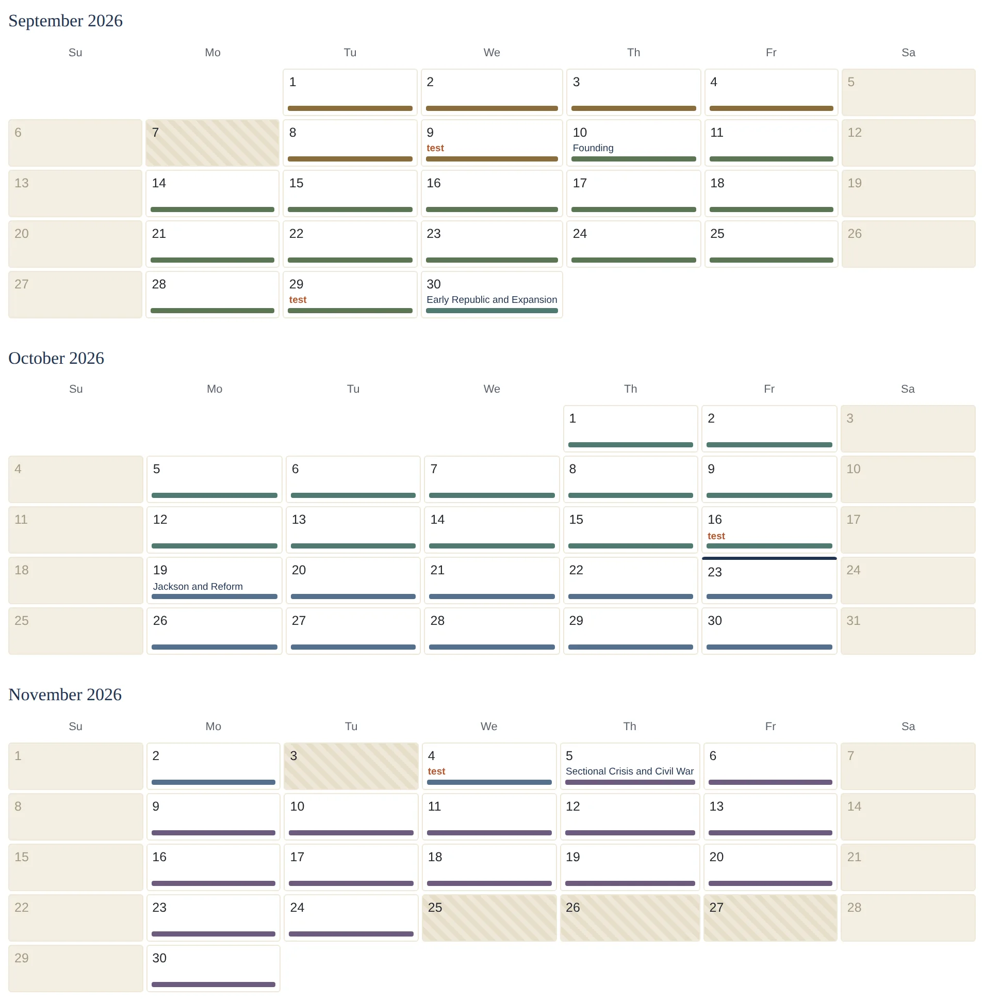
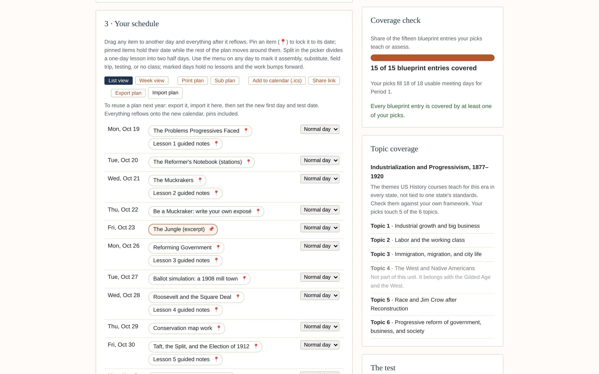
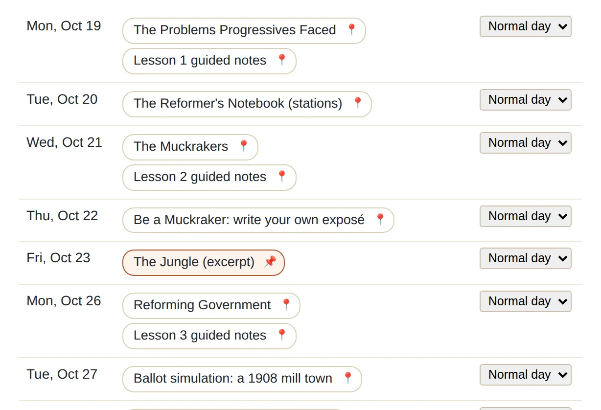
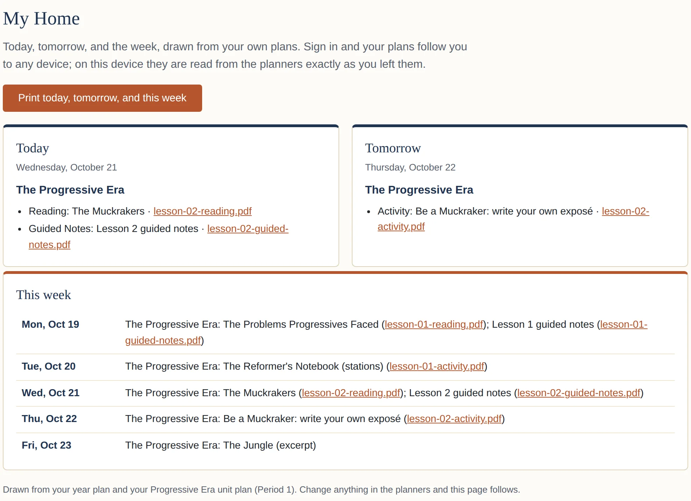
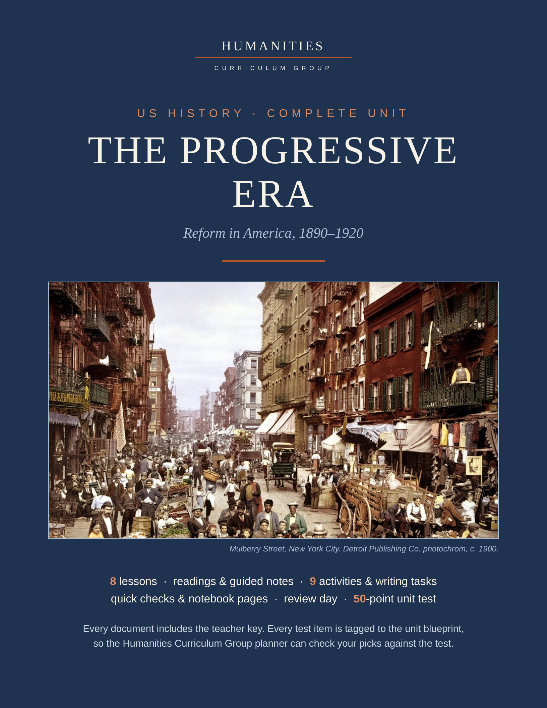

Every unit ships as a complete plate of readings, guided notes, activities, and a test built to a published blueprint. You pick what fits your students, and the built-in planner lays your picks onto your actual school days and checks them against everything the test covers.
Get the free sample unit Try the planner



Humanities Curriculum Group is a US history curriculum built around complete, classroom-ready units and the planning work that surrounds them. Each unit gives teachers a full plate of lesson materials and a test tied to a published blueprint. The built-in planner then turns selected materials into a unit or year calendar and checks coverage before the test arrives. Its first course is US History, complete in fifteen units, and the complete Progressive Era unit is available free so teachers can examine the model before subscribing to the rest of the course. The aim is practical. Teachers get fewer disconnected downloads and a clearer line from daily lessons to the assessment at the end of the unit.
Most curriculum sites sell you a fixed plan or a pile of files. This one sells the content and the system that turns it into your year.
Each lesson offers the same set of options: a reading, guided notes, a hands-on activity, a notebook page, a quick check, and writing work. Nothing is mandatory. Teach the lesson your way, with materials that match.
Enter your start date and test date. The planner proposes pacing from the unit blueprint, drops your picks onto real school days, and lands the test at the end of the unit automatically.
Every assignment and every test item is tagged to the unit blueprint. The coverage meter shows what your picks teach, names anything the test covers that your picks miss, and suggests the assignment that fills the gap.
Every unit in the course is built on the same plate, so the free sample shows exactly what every unit delivers. This is the whole of it, for one unit.
Across the course: 15 units, 750 documents, 120 decks, all built on this same plate.
Real screens from the planner, running on the free Progressive Era sample unit. Click a screen to see it full size.




The whole year, laid outThe year planner lays the whole course across your school days. Unit bands flow around days off, and each band ends on its test day.
Picks land on real daysIn the unit planner, your picks land on real school days, and the coverage check keeps score against the test blueprint as you plan.
Your additions join the same planResources you add join the same plan. This TPSP source, The Jungle (excerpt), sits pinned to Friday, October 23, between regular lessons.
Open it and teachTeacher home opens on the day itself: today and tomorrow in full, and the week at a glance, drawn from your saved plans.
Downloaded files sit in a folder until you build the calendar yourself. Here the calendar is part of the product: the same plan drives your pacing, your coverage check, your sub plans, and your morning view.
The unit planner lays your picks onto your real school days, flowing around your days off, and lands the test at the end of the unit. The year planner does the same for all fifteen units across your school year.
Every pick and every test item carries a blueprint tag, so the coverage check can name what your plan misses and suggest the assignment that fills it, while there is still time to add it.
The sub plan lists each day's materials with their file names. Teacher home opens on today, tomorrow, and the week at a glance, designed to print for the classroom wall or the sub folder.
One unit is free in full. Everything else is a single subscription, monthly or annual, with no tiers and no per-unit charges.
$0
The complete sample unit holds eight lessons, a review day, and the 50-point unit test, all 36 documents, free with an email address and no account. Planning it in the unit planner and the year planner is free too.
Get the free unit$9.99 per month, cancel anytime
$59 per year, cancel anytime
Every remaining unit with the full plate, your year and unit plans saved to your account so they are waiting on any device you sign in on, and the teacher home view. Monthly or annual, it is the same All-Access either way, and the annual plan runs about half the monthly cost across a year.
See All-AccessCheckout runs through Stripe. Subscriptions are billed monthly or annually, cancel anytime, and switch on for your account automatically as soon as checkout finishes.
The Progressive Era unit is complete and free: eight lessons, a review day, and a 50-point unit test with a full answer key. Download it, teach from it, and run it through the planner.

Industrial problems, muckrakers, reforming government, Roosevelt and the Square Deal, the split of 1912, Wilson's New Freedom, the suffrage fight, and the limits of the movement. Thirty-six documents in all, every one print-ready.
See the full unitThe planner runs on every unit in the course. Set your dates, pick your assignments, and watch the coverage meter respond. Plans save on this device, and sync to your account when you sign in.
Open the planner · Plan the whole yearAll fifteen units are published, from Colonial America to Modern America, every one built on the same template as the free sample. US History was built completely before any second course begins.
See the course map